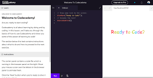

WELCOME NEWBIE CODERS!!
As as former newbie coder myself, I understand thst it can seem intimidating at first.
But don't worry! As long as you keep at it, you get the hang of it eventually.
Plus, there are lots of resources available to help you out. Check out a few of them below:
Links for practicing coding
The following are links to websites I commonly use when practicing coding languages:
Codecademy
Codecademy was the first website I used when starting out coding, and it's one I still use to this day.
With very interactive lessons and step by step instructions on how to build your code,
Codecademy will turn you into an experienced coder in no time!
FreeCodeCamp
Free Code Camp is another coding website I commonly use. The lessons are longer and
more individualized compared to Codecademy, but similarly easy to follow along.

Links for coding references
These are links I use when I need additional help with certain languages or concepts
W3 Schools
The World Wide Web Consortium (W3C) is responsible for developing guidelines for writing code, and
W3 Schools is their website for studying different type of code. No matter what type of code my might be learning,
their website offers all types of helpful tips and tricks for writing the best code you can.

MDN Web Docs
Another resource hub I constantly reference, MDN Web Docs, owned by Mozilla (makers of Mozilla Firefox)
houses a variety of useful notes for learning many different coding languages.